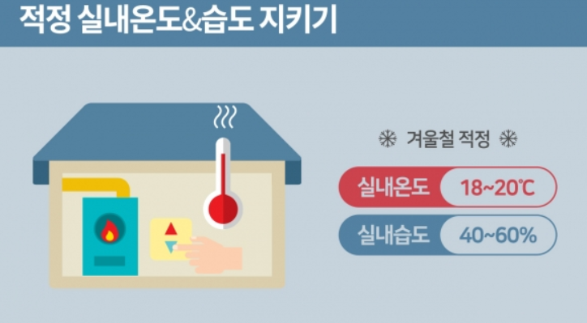
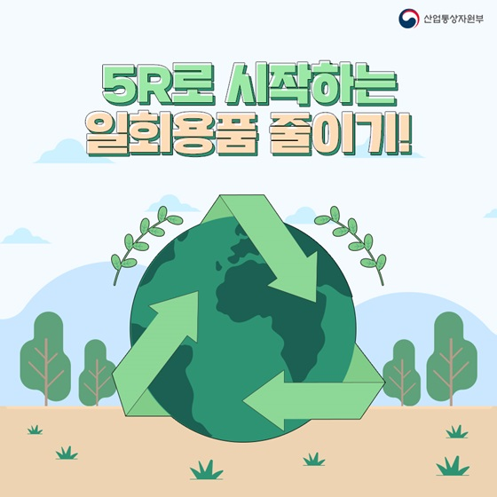

적정 실내 온도 유지하기기과도한 냉난방기 사용은 다량의 온실가스를 발생킨다. 우리 집 전기세, 가스비만 오르는 게 아니라 지 구 온도까지 같이 상승시키는 것이다. 여름철 실내 적정온도는 24~26°C 이다. 에어컨 냉방 온도를 2°C 높이 면 이산화탄소를 연간 5.3kg 줄이는 효과를 볼 수 있다. 지나치게 낮은 온도로 냉방기를 가동하면 오 히려 냉방병과 같은 여름철 질병에 노출될 수도 있다. 우리 가족의 건강과 지구를 위해 되도록 적정 실 내 온도를 유지해 봅시다. |
 |
텀블러와 장바구니 챙기기쓰레기는 온실가스를 배출하는 주요 원인이다. 특히 플라스틱이나 비닐은 생산 과정에서 온실가스를 발 생시키는 것은 물론, 잘 썩지 않아 처리하는데도 문제가 된다. 환경부에서는 심각성을 느끼고 일회용품 과의 전쟁을 선포했다. 조금 무거워도 외출 시에는 텀블러, 장바구니 등을 항상 챙기는 것을 추천한다. 쓰지 않는 다회용기는 결국 환경을 파괴하는 쓰레기가 됩니다. |
 |
환경 보호와 건강을 챙기는 식습관 들이기환경 보호는 식탁 위에서도 실천할 수 있습니다. 온실가스의 주범인 음식물 쓰레기를 줄이기 위해 먹을 만 큼만 조리해 먹는 습관을 들여야한다. 배달음식을 시킬 때는 먹지 않는 반찬은 주문하지 않고, 양이 많다면 다회용기에 덜어 1 ~2차례 나눠 먹는다. 육류를 줄이는 것도 환경을 보호하는 데 도움이 됩니다. 전 세계 가축이 배출하 는 이산화탄소 양이 자동차 매연보다 더 많기 때문입니다. 일주일에 하루만이라도 고기 없는 식단을 차린 다면 지구 온난화를 늦추는 데 도움이 될 것이다. |